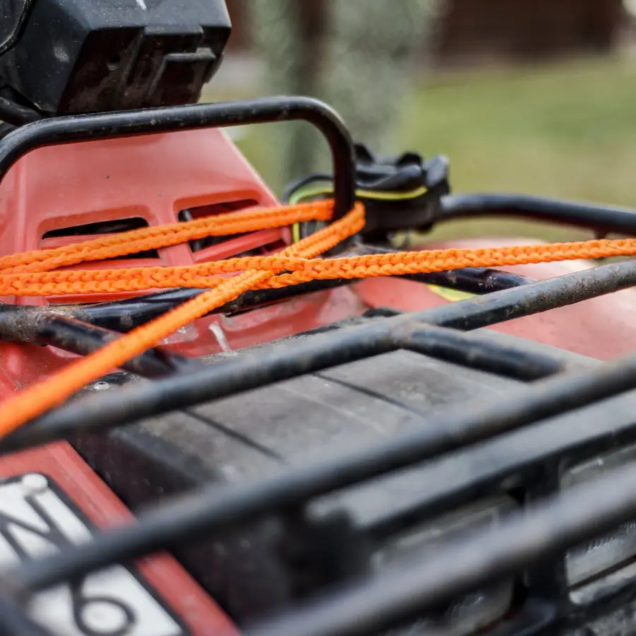
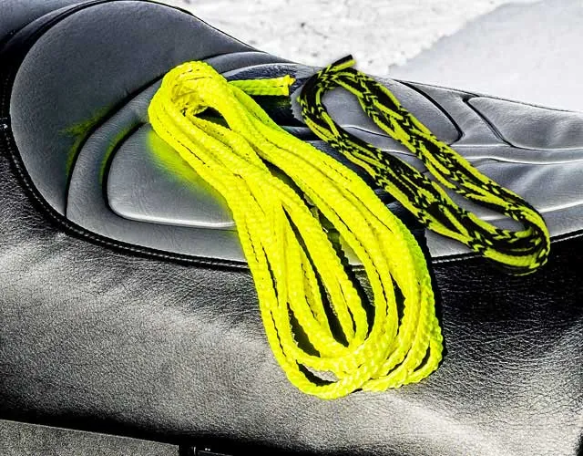

For an active snowmobile life. No 20 is the heavy-duty rope for towing, easy to lock and release with gloves on, and No 8 is the all-round rope for securing cargo on the sled.

A frozen knot is no fun at minus twenty. RunLock has no knots: the running loop goes over the hitch, the quick loop through the ring, and both release with one pull even when the rope is stiff with ice. The stretch in the No 20 makes the start gentle for both machines.
The No 8 holds the fuel can and the packing on the sled with a securing lock that stays tight thanks to the built-in stretch. Polyester does not swell in water and does not take on the cold.